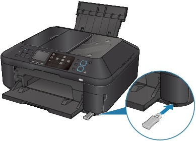

This section describes the procedure to print photos through Bluetooth communication from a mobile phone with the optional Bluetooth Unit BU-30.
When printing from a mobile phone through Bluetooth communication, refer also to your mobile phone's instruction manual.
For the procedure to print through Bluetooth communication from the computer, refer to About Bluetooth Communication.
 Note
Note-
Mobile phones supporting OPP (Object Push Profile) or BIP (Basic Imaging Profile) can be used to print photos.
Depending on your mobile phone, you may not perform printing even if your mobile phone supports the profiles above. For information on the profiles your mobile phone supports, refer to your mobile phone's instruction manual.
-
Make sure that the machine is turned on.
-
Load paper.
-
Attach the optional Bluetooth Unit BU-30.
Insert the Bluetooth Unit BU-30 into the Direct Print Port.
 -
Press the Setup button.
-
Select Print from mobile phone, then press the OK button.
The print standby screen is displayed.
Note-
You can change the print settings by pressing the right Function button. For setting items, see Mobile phone print settings.
-
-
Start printing from a mobile phone.
-
For the device name, select the default value "Canon XXX-1" (where "XXX" is your machine's name).
-
If you are required to input a passkey, input the default value "0000".
You can change the device name of the machine, passkey, and so on from the Bluetooth settings screen.
Note-
Communication is possible in a range of up to about 33 ft. / 10 m depending on the conditions below. Printing speed may vary depending on the following conditions:
Presence of obstacles between the communication equipment, and radio conditions.
Presence of magnetic fields, static electricity, or electromagnetic interference.
Receiver sensitivity and antenna performance of the communication equipment.
-
Video files cannot be printed.
-
Depending on your mobile phone data saved on a memory card may not be printed.
-
About transmittable data
-
Due to security settings on the mobile phone, downloaded content or photos downloaded from a URL attached to an E-mail cannot be printed.
-
Depending on the size of a photo, it may take a while for this machine to start printing after starting wireless communication.
-
Printed quality and orientation (portrait or landscape) are determined automatically according to the shot photo size.
-
Depending on the photo size shot on the mobile phone, the edges of the image may be cut off when performing borderless printing; the margin size may change when printing with borders.
-
If the photo file is over 1.8 MB in size, it may not be possible to send the file.
-
-